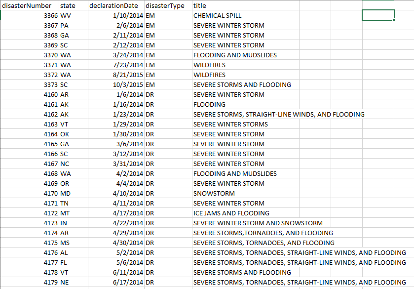
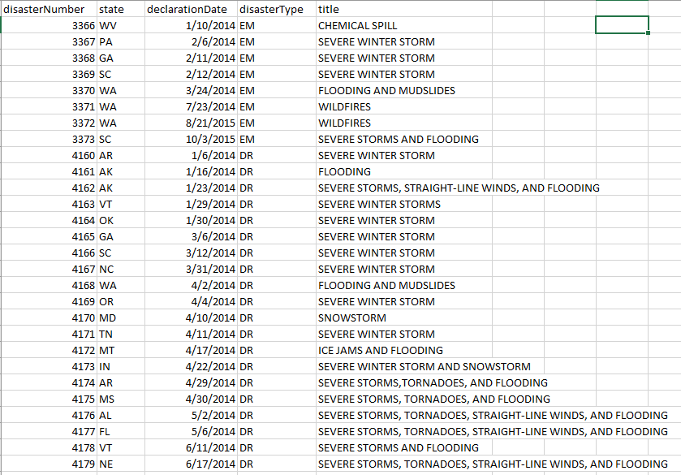
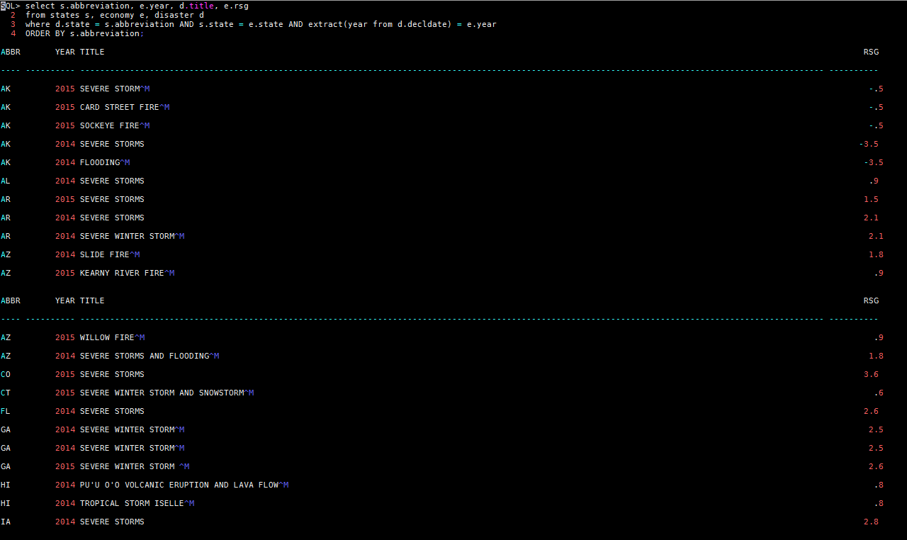
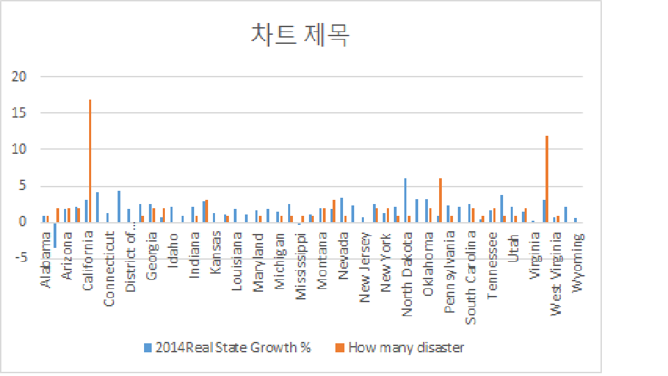
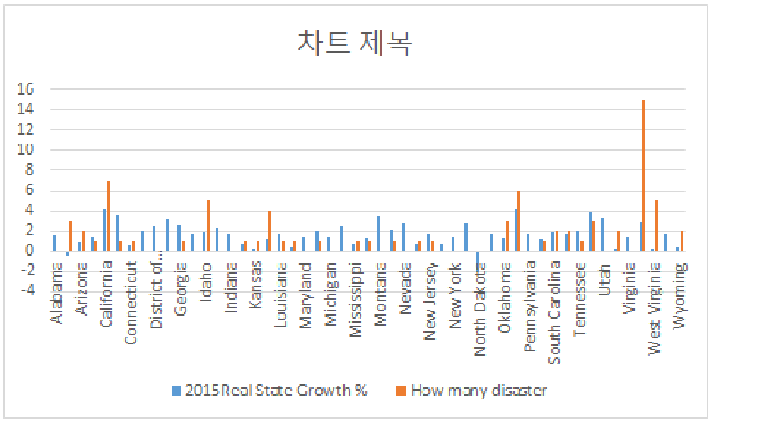

Dataset We Use (Economy & Disaster)
 

Query We Use
I just dit the simple select again where I put the state the year and the rsg. Then I count the sum of the disaster for each year, and take the average of the real state growth.
Conclusion
According to the graph, California have a lot of disaster, but they have good responding to the disaster, so the economy growth fine. In other hand, Although Virginia have less disaster, however, their economy growth didn’t change that much. As a result, the state growth and the disaster relation really depend on which state is it.

